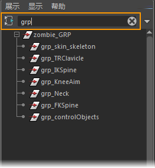
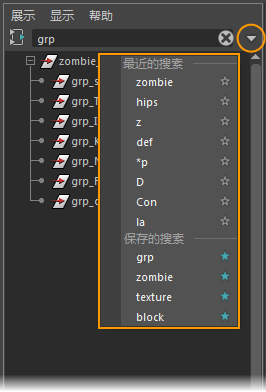

可以使用“搜索”(Search)字段和“搜索”(Searches)列表在大纲视图中搜索节点。为了帮助您过滤图表中显示的节点，节点编辑器中提供了相同的“搜索”(Search)字段。

- 您可以开始在“搜索”(Search)字段中键入字符串，节点会自动过滤以匹配键入的字符串。
注： 搜索与上下文无关。
按住 Shift 键并单击节点名称旁边的加号
 可快速展开每个层次，以查看其所有节点。
可快速展开每个层次，以查看其所有节点。
- 使用带有 * 和 ? 字符的通配符，其中，* 代表多个字符，? 代表单个字符。例如，输入 d* 可查找所有以“d”开头的节点。可以在单个搜索字符串中多次使用这些字符。
注： 不能使用“...”字符串搜索文件名称空间。
- 如果已从“渲染设置过滤器”(Render Setup Filter)列表中选择过滤器选项，则搜索将限制于因该过滤器而显示的节点。
- 单击“搜索”(Search)字段末端的 X 将其清除。也可以选择字符串，然后按 Delete 键或 Backspace 键。
- 单击“搜索”(Search)字段右端的三角形以打开“搜索”(Searches)列表。“最近的搜索”(Recent Searches)列表将显示您输入的 10 个最新搜索字符串，单击其中一个可再次使用。

保存搜索字符串
- 打开“搜索”(Searches)列表。
- 在“最近的搜索”(Recent Searches)列表中，单击要保存的搜索字符串旁边的星形。此字符串将添加到下面的“保存的搜索”(Saved Searches)列表中，其星形将变为蓝色。
最多可以保存 10 个搜索字符串。如果尝试保存 10 个以上搜索字符串，则将显示一条消息，告知您需要从“保存的搜索”(Saved Search)列表中移除某些项目才能添加新项目。
- 再次单击此字符串的星形，将其从“保存的搜索”(Saved Searches)列表中移除。
注： 最近的搜索字符串和保存的搜索字符串均适用于“大纲视图”(Outliner)和“节点编辑器”(Node Editor)。
保存首选项（(File > Save Preferences)）时，“最近的搜索”(Recent Searches)和“保存的搜索”(Saved Searches)列表存储在 userPrefs.mel 文件中。